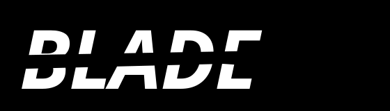

mine
free minecraft server for you and your friends.
no account. no credit card. runs on your machine.
- download the script
- run it once
- share your IP
the script installs Java if needed, downloads your chosen server (Vanilla, Paper, Fabric, or Forge), configures everything, and opens a local dashboard at localhost:8080 to manage it.